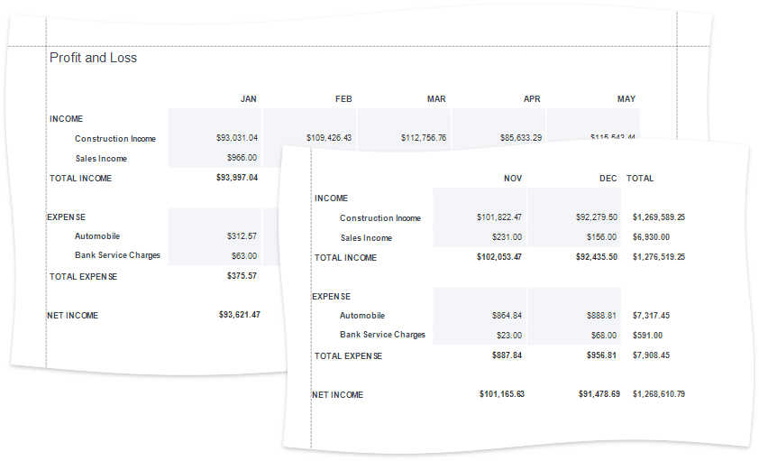
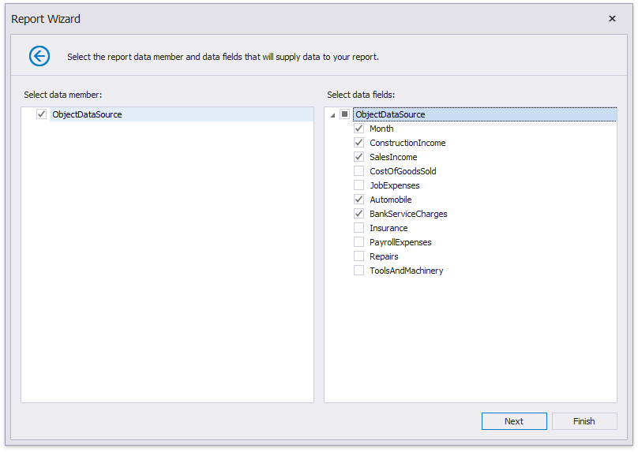
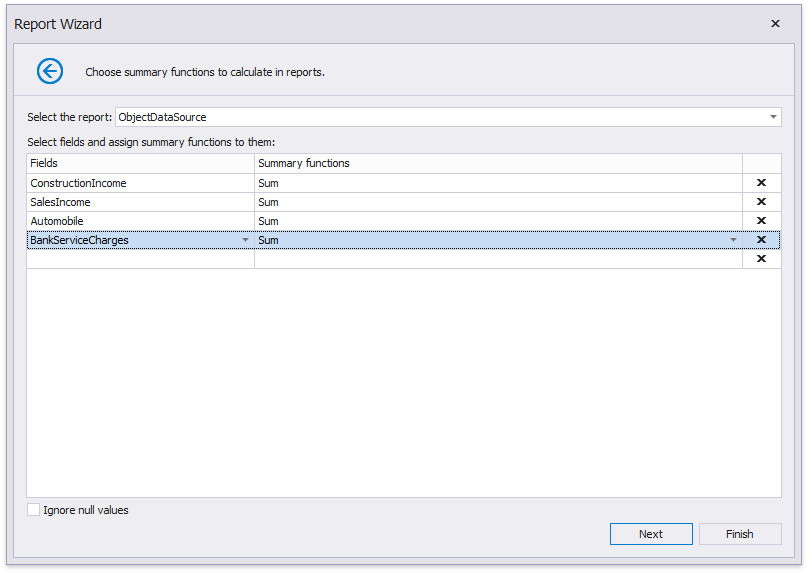
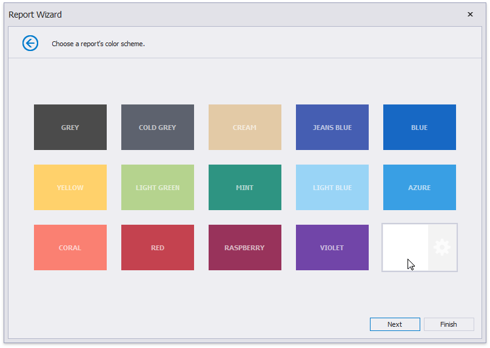
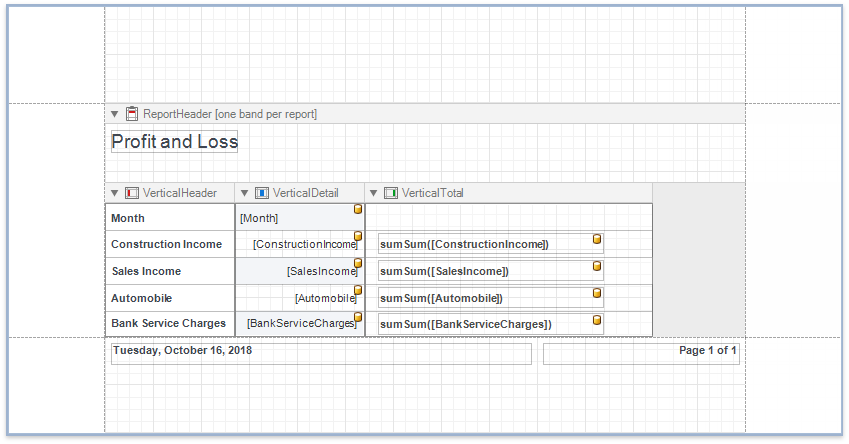

Create a Vertical Report
This tutorial describes how to use vertical bands to create a report where record fields are arranged vertically and data records are printed horizontally.

Bind the report to a required data source.
Click the report's smart tag and choose Design in Report Wizard....

In the invoked Report Wizard, select Vertical Report and click Next.

Select the data fields that should be included in the report.

Specify group data fields to create a report with grouped data (the report in this tutorial does not have group fields).
Add summary fields to the report.

Change the report page layout to landscape so that the vertical table fit the report.

You can set the report's color scheme.

Specify the report's title.

Click Finish and the generated report opens in the Report Designer.

The wizard adds report controls to the following bands:
- Vertical Header band
Contains a table with a single column that displays headers of the report's data fields. - Vertical Details band
Contains a table with a single column that is printed so many times as there are records in the report's data source. - Vertical Total band
Contains a table with a single column that has so many labels in cells as there are summary functions you specified for each field in the Report Wizard (only the sum function for each field in this demo).
Switch to the Preview tab to see the result.

Tip
You can create a vertical report without using the Report Wizard. Right-click the report in the Report Designer and choose Insert Vertical Band in the invoked context menu. Refer to the Introduction to Banded Reports topic for more information.
Set Vertical Table Options
You can set the following options in the Property Grid to modify the vertical table:
Disable the Vertical Header band's Repeat Every Page property to display field headers once - on the first report page.
Set the Vertical Detail band's Band Layout property to Across Then Down to print the data records that do not fit a page on the same page, otherwise, they are printed on the next page (as in this demo).
Specify the Vertical Detail band's Sort Fields property to sort the report's data.